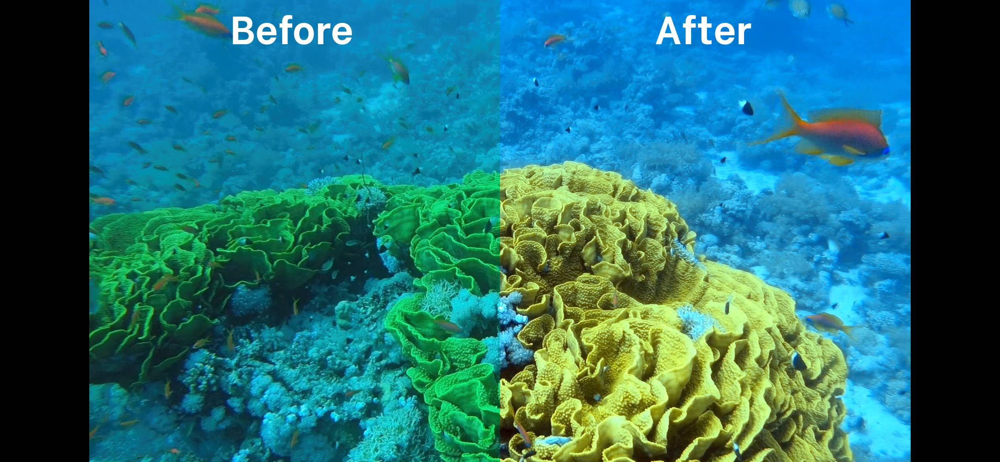
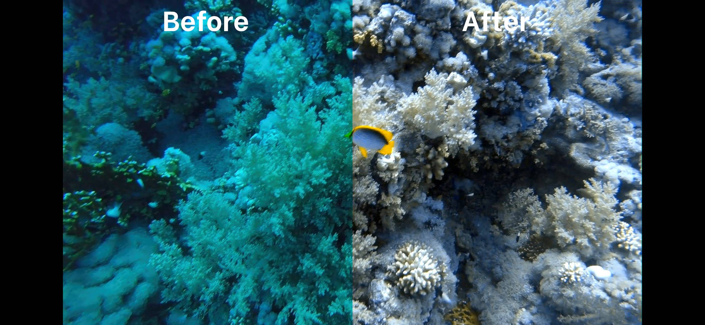
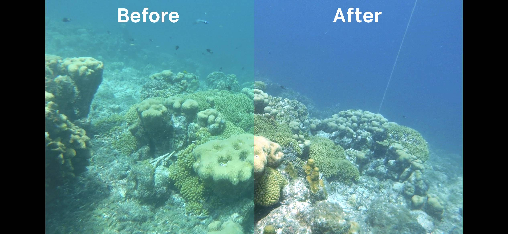
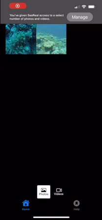

SeaReal is an iPhone app intended to bring vibrant color back into your scuba and snorkeling photos & videos with just the swipe of a finger. It was built to be an alternative to more involved manual color correction techniques.
To use the app, simply select a photo or video from your library, and adjust the "Red gain adjustment" and "Exposure adjustment" sliders to your liking. Once you've adjusted those items, you can then save the newly adjusted photo or video to your library (this will create a new photo/video rather than update your original). Here is an example using a video:

To report an issue, contact searealapp@gmail.com, and we will do our best to reply.